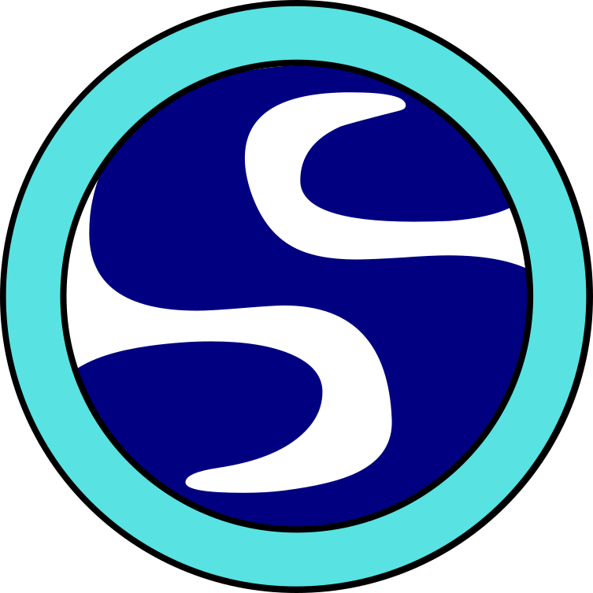

Websites & platforms
Responsive websites and content platforms designed around your business and the people you serve.

ANTONIS.INDEPENDENT WEB DEVELOPER · KALAMATA, GREECE
I build thoughtful websites and digital experiences for people with something worth sharing.
01 — WHAT I DO
From the first sketch to launch day, I help turn a clear idea into a useful, memorable online experience.
Responsive websites and content platforms designed around your business and the people you serve.
Online shops that make it easier to present your products and help customers buy with confidence.
Practical guidance on domains, hosting, search visibility, analytics and the tools behind your site.
Visual identity assets, plus aerial photography and video for places, properties and projects.
02 — SELECTED WORK
A selection of websites made for businesses and places with a story to tell.
03 — A LITTLE ABOUT ME
I’m Antonis, a web developer and digital consultant based in Kalamata, Greece. I work with businesses to create clear, dependable websites and help them make better use of the web.
Alongside digital work, I create aerial photos and videos that show the places and projects I care about from a different perspective.
A project, a question, a hello04 — GET IN TOUCH
Have a project or need a hand with your website? Tell me a little about it.
antoniskp@gmail.com